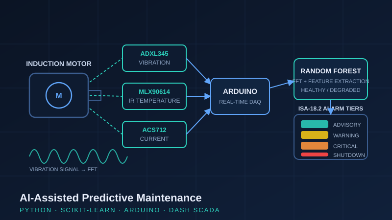

Project Case Study · Dec 2025 – Feb 2026
AI-Assisted Predictive Maintenance System
A motor health monitoring system that fuses vibration, temperature, and current measurements, classifies motor condition with machine learning, and annunciates faults through tiered ISA-18.2-style alarms on a live SCADA-style dashboard.

The problem
Unplanned motor failure is one of the most expensive events on a plant floor, and most failures announce themselves early, as rising vibration, heat, or current draw, long before the motor stops. The industry answer is condition-based monitoring. This project builds a complete, working version of that pipeline at bench scale: sense, acquire, extract features, classify, and alarm.
Multi-sensor data acquisition
- ADXL345 accelerometer for three-axis vibration measurement mounted on the motor frame.
- MLX90614 infrared sensor for non-contact surface temperature measurement.
- ACS712 Hall-effect sensor for motor current draw.
- An Arduino performs real-time, multi-parameter acquisition and streams synchronized readings to a Python host application.
Feature extraction & machine learning
Raw signals were processed into time-domain features (RMS, peak, statistical measures) and frequency-domain features via FFT of the vibration and current signals: the same feature families used in commercial vibration analysis. A Random Forest classifier (scikit-learn) was trained on labelled healthy and degraded motor states, achieving measurable separation between fault classes. Random Forest was chosen for its robustness on modest datasets and its interpretable feature-importance output, which links predictions back to physical symptoms.
Alarm management: ISA-18.2 principles
Rather than a single "fault" light, the system implements four alarm tiers consistent with ISA-18.2 alarm-management practice: advisory → warning → critical → emergency shutdown. Each tier has distinct thresholds and operator actions, mirroring how alarms are rationalized in real facilities so operators are guided, not flooded.
SCADA-style visualization
A Python Dash dashboard displays live sensor trends, current classifier state, and fault indicators in a layout modelled on industrial SCADA displays: live values, trend history, and alarm status visible at a glance.
What this demonstrates
The combination most instrumentation candidates don't have: classical sensing and alarm engineering integrated with practical machine learning and modern data tooling, the exact skill set predictive maintenance and Industry 4.0 initiatives are hiring for.